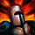
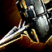
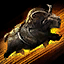

Objective Upgrades
Automatic upgrades, claim aura, tactics and improvements
AUTOMATIC UPGRADES
Automatic Upgrades improve the structures and have different tiers. Each tier requires an increased ammount of dolyaks to upgrade.
| SECURED: 20 DOLYAKS | REINFORCED: 40 DOLYAKS | FORTIFIED: 80 DOLYAKS |
|---|---|---|
| CAMP | ||
| Caravan Guards: Recruits guards to escort the camp's dolyak caravans. | Additional Guards: Recruits additional guards to protect the objective. | Recruit Patrol: Recruit guards to patrol the objective. |
| Storage Expansion: Increases the objective's maximum supply hold size by 100. |  Guard Training: Increases the level of all guards at the objective. | Storage Expansion: Increases the objective's maximum supply hold size by 100. |
| TOWER | ||
| Build Pot of Oil: Fortifies the objective with a pot of burning oil. | Reinforced Walls: Increases the health and defense values of the objective's walls and gates to Reinforced levels. | Fortified Walls: Increases the health and defense values of the objective's walls and gates to Fortified levels. |
| Build Cannon: Fortifies the objective with a cannon. | Build Mortar: Fortifies the objective with a mortar. | Recruit Patrol: Recruit guards to patrol the objective. |
| Recruit Outfiter: Recruits a general-goods vendor to the objective. | Recruit Siegemaster: Recruits a siege-weapon vendor to the objective. | Guard Training: Increases the level of all guards at the objective. |
| Storage Expansion: Increases the objective's maximum supply hold size by 200. | Additional Guards: Recruits additional guards to protect the objective. | Storage Expansion: Increases the objective's maximum supply hold size by 200. |
| KEEP | ||
| Build Pots of Oil: Fortifies the objective with pots of burning oil. | Reinforced Walls: Increases the health and defense values of the objective's walls and gates to Reinforced levels. | Fortified Walls: Increases the health and defense values of the objective's walls and gates to Fortified levels. |
| Build Cannons: Fortifies the objective with cannons. | Build Mortars: Fortifies the objective with mortars. | Build Waypoint: Fortifies the objective with a waypoint. |
| Additional Guards: Recruits additional guards to protect the objective. | Recruit Services: Recruits a siege-weapon vendor, a banker, and an armor repairer to the objective. | Guard Training: Increases the level of all guards at the objective. |
| Storage Expansion: Increases the objective's maximum supply hold size by 300. | Recruit Patrols: Recruit guards to patrol the objective. | Storage Expansion: Increases the objective's maximum supply hold size by 300. |
| STONEMIST CASTLE | ||
| Build Pots of Oil: Fortifies the objective with pots of burning oil. | Reinforced Walls: Increases the health and defense values of the objective's walls and gates to Reinforced levels. | Fortified Walls: Increases the health and defense values of the objective's walls and gates to Fortified levels. |
| Build Cannons: Fortifies the objective with cannons. | Build Mortars: Fortifies the objective with mortars. | Build Waypoint: Fortifies the objective with a waypoint. |
| Additional Guards: Recruits additional guards to protect the objective. | Recruit Services: Recruits a siege-weapon vendor, a banker, and an armor repairer to the objective. | Guard Training: Increases the level of all guards at the objective. |
| Storage Expansion: Increases the objective's maximum supply hold size by 400. | Recruit Patrols: Recruit guards to patrol the objective. | Storage Expansion: Increases the objective's maximum supply hold size by 400. |
GUILD CLAIMING
Guild Objective Auras are unlocked effects that passively increase allies' attributes and other effects while in the area of a claimed objective. Each effect is unlocked in tiers, maintaining the bonuses of the previously unlocked effects. The effect can be doubled by using the improvement Presence of the Keep.
Note: the +25% Movement Speed do not stack. Meaning you don't have permanent  Superspeed.
Superspeed.
| OBJECTIVE AURA | EFFECT | BONUS |
|---|---|---|
| 1 | Supply Capacity | Max Supply +5 |
| 2 | WvW Experience | WvW Experience +10% |
| 3 | Movement Speed | Movement Speed +25% |
| 4 |  Power Power |
Power +100 |
| 5 | Precision | Precision +100 |
| 6 | Toughness | Toughness +100 |
| 7 | Vitality | Vitality +100 |
| 8 | Magic Find | Magic Find +20% |
Normal claim aura level 8
Presence of the Keep buff

Superspeed.
IMPROVEMENTS
Passive bonuses that improve gates, walls, and provide bonus effects to allies. Unlocked by set timers after an objective is first claimed.
In case of removal of the claim, the improvements and tactics will become inactive until a new claim happens, when newly claimed they will be on a 3 minutes cooldown.
The most valuable ones are Hardened Gates, Iron Guards, Watchtower, Presence of the Keep and Cloaking Waters.
It's preferable having Hardened Gates abd Iron Guards on all structures.
Sabotage Depot is a great trap for structures you aren't planning to hold.
Speedy Dolyaks are best for camp not protected and dolyaks not being escorted. In case you have people giving  Swiftness or Superspeed to them you can use Packed Dolyaks making each one count twice while still running fast.
Cloaking Waters radius visualized with 25% movement speed from the claim buff.
Notes: With Swiftness or Superspeed the radius will increase and the portals have not been taken into consideration.
Swiftness or Superspeed to them you can use Packed Dolyaks making each one count twice while still running fast.
Cloaking Waters radius visualized with 25% movement speed from the claim buff.
Notes: With Swiftness or Superspeed the radius will increase and the portals have not been taken into consideration.
| TIER 1: 10 MINUTES | TIER 2: 30 MINUTES | TIER 3: 60 MINUTES |
|---|---|---|
| Sabotage Depot: Deploy bombs at the supply depot that will explode if the objective is captured by an enemy team. The explosion will destroy all remaining supply at the objective. | Iron Guards: Guards gain Iron Hide, reducing incoming damage by 50%. |  Auto Turrets: Automatic turrets deployed above the objective's gates. |
| Hardened Gates: Gates can only be damaged by siege weapons. | Hardened Siege: Greatly reduces non-siege weapon damage to cannons, mortars, and oil pots. |  Watchtower: A spy balloon is deployed above the tower, which will mark nearby enemies on the map. Watchtower: A spy balloon is deployed above the tower, which will mark nearby enemies on the map. |
| Armored Dolyaks: Dolyaks gain increased health and toughness. | Presence of the Keep: Allied players gain double the effectiveness of the keep's objective aura while within the perimeter of the keep. | |
| Packed Dolyaks: Dolyaks now carry twice as much supply. |  Cloaking Waters: The fountains in the castle's courtyard grant stealth to allies. Cloaking Waters: The fountains in the castle's courtyard grant stealth to allies. |
|
|  Speedy Dolyaks: Dolyaks gain superspeed. |
| CAMP | TOWER | KEEP | STONEMIST CASTLE |
|---|---|---|---|
| Sabotage Depot | Sabotage Depot | Sabotage Depot | Sabotage Depot |
| Armored Dolyaks | Hardened Gates | Hardened Gates | Hardened Gates |
| Packed Dolyaks | Hardened Sieges | Hardened Sieges | Hardened Sieges |
| Speedy Dolyaks | Iron Guards | Iron Guards | Iron Guards |
| Auto Turrets | Auto Turrets | Auto Turrets | |
| Watchtower |
Presence of the Keep | Cloaking Waters |
Swiftness or Superspeed to them you can use Packed Dolyaks making each one count twice while still running fast.
Cloaking Waters radius visualized with 25% movement speed from the claim buff.
Notes: With Swiftness or Superspeed the radius will increase and the portals have not been taken into consideration.
TACTICS
Active bonuses that can be triggered by the objectives' tactivators. Unlocked by set timers after an objective is first claimed.
If an Emergency Waypoint (EWP) is being camped by enemies, you can spam dodge while in loading screen to hopefully get out of the damage as soon as you can move. In case of death you can take it again and have a few seconds of invulnerability where you can move freely.
When Chilling Fog is being used against you, you can convert the  Chilled into
Chilled into  Alacrity and recharge faster your skills.
LINKS
Wiki Objective Upgrades
Alacrity and recharge faster your skills.
LINKS
Wiki Objective Upgrades
| TIER 1: 10 MINUTES | TIER 2: 30 MINUTES | TIER 3: 60 MINUTES |
|---|---|---|
| Minor Supply Drop: Activate this Tactic to have 100 supply deposited at the objective. |  Centaur Banner: Summon a Centaur Banner at your objective. This banner provides the wielder access to powerful offensive skills, as well as a break bar. Centaur Banner: Summon a Centaur Banner at your objective. This banner provides the wielder access to powerful offensive skills, as well as a break bar. |
 Emergency Waypoint: Activate this tactic to temporarily create a uncontesable waypoint at the objective. Emergency Waypoint: Activate this tactic to temporarily create a uncontesable waypoint at the objective. |
| Chilling Fog: Activate this Tactic to temporarily summon chill inducers that will chill invaders at the objective. | Turtle Banner: Summon a Turtle Banner at your objective. This banner provides the wielder access to powerful defensive skills, as well as a break bar. | Invulnerable Fortifications: Activate this tactic to temporarily make all walls and gates at the objective invulnerable. |
| Invulnerable Dolyaks: Activate this Tactic to make the next set of dolyaks invincible, guaranteeing that they will reach their destination. | Dragon Banner: Summon a Dragon Banner at your objective. This banner provides the wielder access to powerful offensive skills, as well as a break bar. |  Airship Defense: Activate this tactic to temporarily summon a fleet of airships to protect the castle from invaders. Airship Defense: Activate this tactic to temporarily summon a fleet of airships to protect the castle from invaders. |
| Dune Roller: Activate this tactic to summon a dune roller at your objective. The user is transformed into a car, granting them increased mobility and siege damage. |
| CAMP | TOWER | KEEP | STONEMIST CASTLE |
|---|---|---|---|
| Chilling Fog | Chilling Fog | Chilling Fog | Chilling Fog |
| Minor Supply Drop | Minor Supply Drop | Minor Supply Drop | Minor Supply Drop |
| Dune Roller | Centaur Banner |
Centaur Banner |
Centaur Banner |
| Invulnerable Dolyaks | Dragon Banner | Dragon Banner | Dragon Banner |
| Turtle Banner | Turtle Banner | Turtle Banner | |
| Emergency Waypoint |
Emergency Waypoint |
Emergency Waypoint |
|
| Invulnerable Fortifications | Invulnerable Fortifications | Invulnerable Fortifications | |
| Airship Defense |
Chilled into Alacrity and recharge faster your skills.
LINKS
Wiki Objective Upgrades